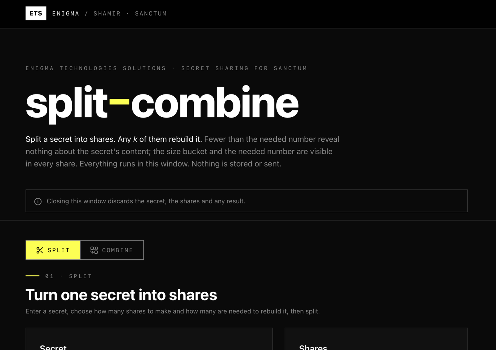
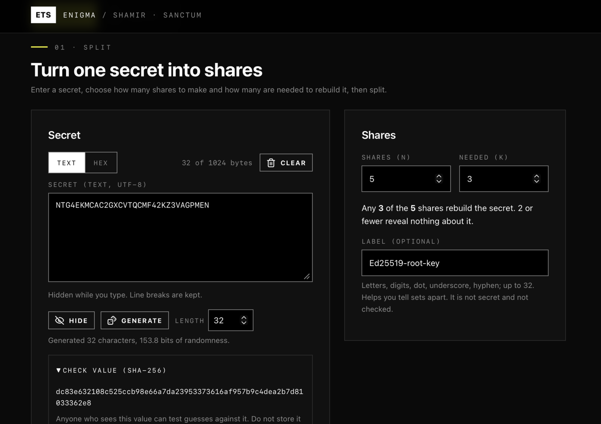
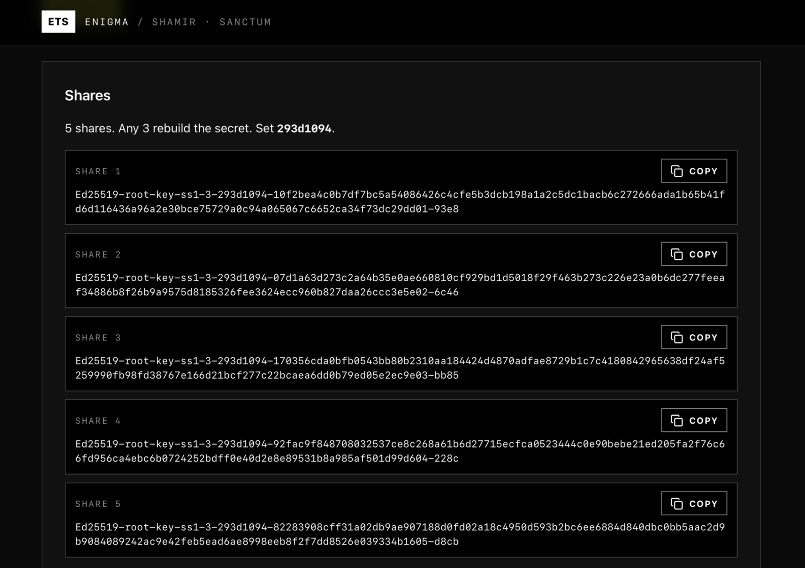
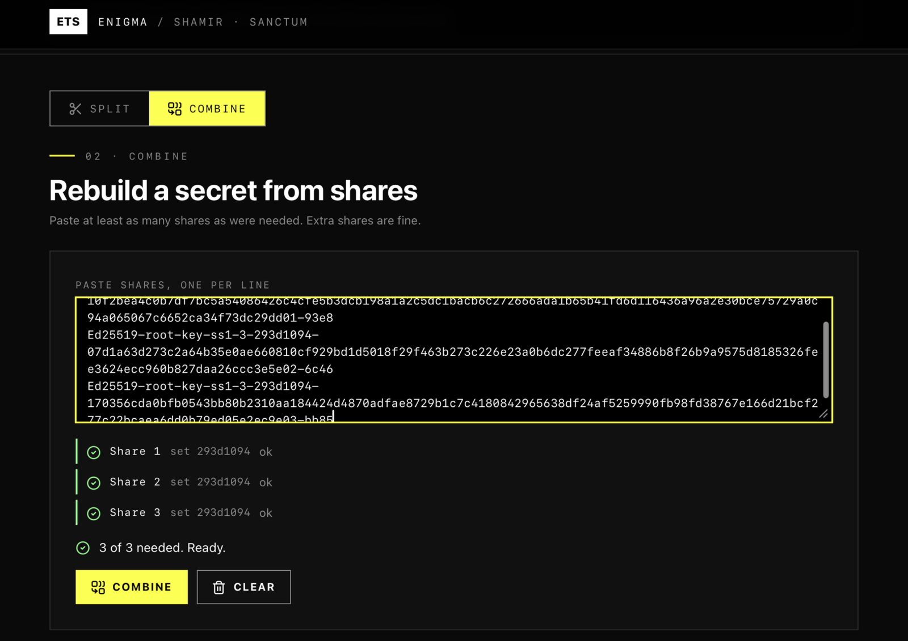

Split a secret into shares and combine them back. Runs offline and asks for no access.
Splits a secret into shares and rebuilds it from any chosen number of them, using Shamir's secret sharing. Everything runs inside the tool window: nothing is stored, downloaded or sent. The default Sanctum share format records how many shares are needed and adds a check to each share, so a wrong, mistyped or mixed share gives a clear error instead of a wrong secret. A plain format is also available. The tool asks Sanctum for no access at all.
Asks for no special access
Published by Enigma Technologies Solutions · Source · AGPL-3.0-only
Install opens Sanctum, which shows this tool and what it asks for, then waits for your click. Nothing is installed from the page itself. Sanctum not installed? Get Sanctum first.
Verified means the publisher is who it says and the bytes have not changed. It does not mean safe. A signature never grants access: every tool still starts with nothing approved, and you approve each capability yourself.
Screenshots




What is new
1.0.2 2026-10-02
Added. Split a secret into shares and rebuild it from any chosen number of them.
Added. The Sanctum share format, which records the threshold and a set id and checks every share.
Added. A plain share format that uses the same bytes as ssss-made-easy and the shamir-secret-sharing npm package.
Added. Secrets are masked and hidden again after 60 seconds without typing or when you switch tabs.
Added. First release signed by Enigma Technologies Solutions.
Manual
What it does
Shamir's secret sharing splits a secret into several shares. Any chosen number of them, called the threshold, rebuilds the secret. Fewer than that reveal nothing about it.
What it asks Sanctum for
Nothing. The approval screen is empty: no storage, no network, no smart card and no device access. Results leave the window only when you press a copy button.
Split a secret
Under Turn one secret into shares, enter the secret, choose how many shares to make and the Needed (k) count, then press Split. Copy each share and give each one to a different person or place. Record the check value (SHA-256) shown when you split, so you can check the result when you combine.
The secret can be up to 1024 bytes.
Combine shares
Under Rebuild a secret from shares, paste the shares into the text box, one per line, then press Combine. With the Sanctum format, the tool tells you if a share is damaged, mistyped, from a different set, or if you have too few. Compare the SHA-256 of the result with the one you recorded.
Formats
Sanctum (default). Looks like ops-ss1-3-0b704569-.... It records the threshold and a set id, and each share carries a checksum. Shares are padded to a multiple of 32 bytes by default so a share does not show the exact length of the secret.
Plain. Looks like 03-.... The bytes match ssss-made-easy and the shamir-secret-sharing npm package. It has no checks, so too few shares give a wrong answer without a warning.
These shares do not work with the ssss-split and ssss-combine command line tools.
Good to know
The checks catch mistakes. They do not stop a dishonest share holder from forging a share, and a matching check does not prove the secret is the original.
There are no downloads, because tool windows cannot save files. Shares go to the clipboard. If the clipboard is blocked, the text is shown selected in a box.
Secrets are masked and hidden again after 60 seconds without typing or when you switch tabs. Clear empties the fields and the bytes the page holds, on a best effort basis.